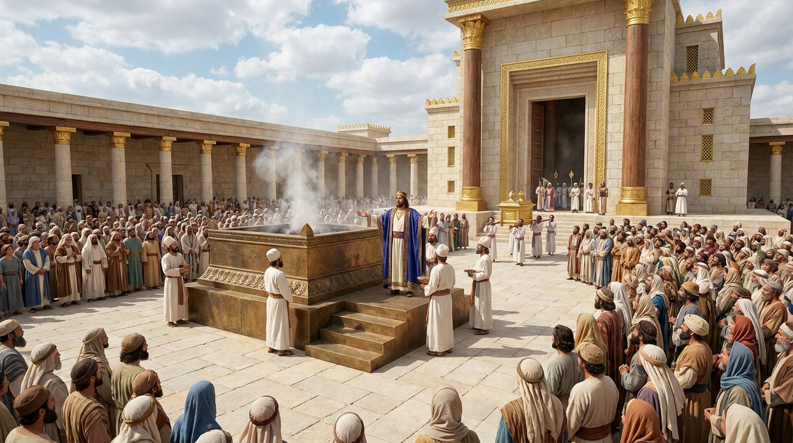

Avivamento, Templo e Esperança
O livro de 2 Crônicas continua a história iniciada no primeiro livro, começando com a grandeza do reinado de Salomão e a magnífica construção do Templo em Jerusalém. Após a divisão do reino, o foco se volta inteiramente para Judá (o Reino do Sul). O texto destaca os reis que buscaram a Deus e promoveram grandes avivamentos espirituais, mostrando que o arrependimento e a adoração sincera sempre trazem o favor e a restauração divina, mesmo diante das falhas que levaram ao exílio babilônico.
Ficha Técnica
- Autor: Desconhecido (a tradição judaica atribui ao escriba Esdras)
- Tema Principal: A construção do Templo, os avivamentos espirituais em Judá, e o princípio de que a busca por Deus traz bênçãos, enquanto o abandono traz julgamento.
- Versículo-Chave: "Se o meu povo, que se chama pelo meu nome, se humilhar e orar, buscar a minha face e se afastar dos seus maus caminhos, dos céus o ouvirei, perdoarei o seu pecado e curarei a sua terra." (2 Crônicas 7:14)
Estrutura
- A sabedoria e a glória do reinado de Salomão (Caps. 1-9)
- A divisão do reino e os reis de Judá (Caps. 10-36)
- Os grandes avivamentos (Ezequias, Josias, etc.) (Caps. 29-35)
- A destruição de Jerusalém e o decreto de esperança de Ciro (Cap. 36)